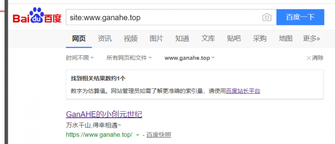

一. 当前版本及特性
（一）Version Least 特性
1.1 已完成并部署上线
- 站点美化：布局、图标等。
- 文章底部原创版权协议及 RSS 订阅等。
- Valine评论系统运行，取消不必要站点位置的评论区。
- TiDio在线联系功能；
- 曲线救国，Daovoice作为备用联系方式。
- 右侧信息栏及社交图标链接美化及正常圆形。
- 看板娘双人组合。
- 菜单重新规划，标签分类定式，文章时间轴归档。
- 站点背景与文章区域设定，不同文章首页划分。
- 页面加载动画与页面阅读进度条设置，页面浮动进度按钮操作与百分比显示。
- 移动端文章面板扩展，收缩边距留白，显示看板娘及站点信息。
- 文章链接持久化，站点地址摒除“年/月/日+文章标题”形式，采用 “web site:+abbrlink” 实现；abbrlink 为文章站点链接，采用随机数防止爬虫批量爬取文章。
- 3D 网型动态背景。
- 图片灯箱。
- 搞怪页面标题。
- 站内内容搜索。
- HTML、CSS 等压缩。
- 文章字数统计、阅读时长估计等功能。
- 双平台：国外服务器 Github、国内服务器 Coding 托管部署。
- 个人服务器部署成功。
- 插入视频外链、通过控制台自定义页面样式。
- 站点域名收录与 SEO 优化，已开启自动推送百度功能。
- 地图。
- 其他。
1.2 功能已实现但存在冲突等无法部署
在线联系作者功能：已完成 DaoVoice 的基本配置，本地调试可运行；问题：部署上线后文章内容解析失败，空白。曲线救国，直链访问。- 右侧浮动版”最新文章”功能已完成逻辑设定，但界面布局冲突无法显示。
- 文章底部同类、近类文章推荐功能完成逻辑设定，界面冲突无法显示。
- 图像懒加载功能，没有阅读到的页面内图像不加载，未来得及加载图像用本地加载图像暂时代替：部署后没有测试出未来得及 Loading 使用本地的效果。
- 文章的本地图像载入站点显示功能，本地可视站点无图。
- 百度子站点尚未收录。
- 置顶功能加入，但没有置顶效果。
（二）Version Least 后续版本改进及长远目标
- 修正前一版本错误问题并部署上线。–>==持续==
Live2D 看板娘互动：聊天、换装等。==完成==文章增添、分类、优化与更新。==完成==- 性能优化：CDN 加速、使用已有图床或自建图床提高图像加载速度等；
- 多平台适配与优化。
- 脱离新文章重部署，后台自动化添加式发布新文章（脚本与容器等部署实现）。
- 上线到个人服务器，实现多人协作创作，并后台数据管理与加密。
- 动态渲染与静态框架结合，实现反爬虫，保护平台文章隐私；
- 多平台产品归档。
- 打造平台交流系统与引流。
- 界面自动化定制。
- 文章更新正常。
二. 版本更迭
| 日期 | 事件 | 备注 |
|---|---|---|
| 2020年4月24日 | 大神的Live2D还在，貌似API指向迁移了。 | |
| 2020年4月23日 | 修复map地图小bug，“点位”获取与图标更改; 添加比例尺。 | |
| 2020年4月23日 | 1.更新五篇文章； 2.大神的Live2D 失效…API问题？ | |
| 2020年4月21日 | 1.插入robots.txt百度爬虫文件； 2.自定义HTML文件，插入菜单栏，不用md文件去 渲染，插入为地图网页。 | |
| 2020年4月17日 | 今天百度站点找不到网站了…. 参考文章做了个python自动推送脚本， 添加推送测试。 | 疑惑.jpg |
| 2020年4月16日 | 1.这是咋了？？？！！！ 痛定思痛，Valine评论无法显示等问题让Blog运行太难受了， 使用Tidio回复有时候自己都进不了后台？？？ ChatVoice会挤占页面…. 更新Hexo从头再来！ 2.发现：双门神似乎源于Next7.x版本自带； 3.clone最新Next7.8主题，并恢复配置，评论功能已经恢复， 同时站点运行时间正式加入，取消粒子时钟。 | |
| 2020年4月14日 | 1.粒子时钟添加成功，就是位置与预想位置有所差别… 2.Valine评论系统还是没恢复，在帮助访友 部署Hexo到服务器时，Tidio反应太慢甚至无法登录！ | |
| 2020年4月9日 | 今天检测百度收录情况：通过！ 子站链接还没推送，在测试时发现CSDN的SEO也太强了， 我自己的文章在其他作者下都有推荐。 | |
| 2020年4月3日 | 1.修改分类样式； 2.取消侧边栏自动文章章节计数，自己添加。 3.完善百度SEO； 4.首页背景框修改为单独样式； 5.样式从_custom/custom迁移到_data/styles.styl； 6.修改页边距及手机端适配： next/source/css/_schemes/Muse/_layout.styl, 选用自己在用的主题即可； 7.F12美化，置顶文字样式出现，但置顶未生效。  8.外链视频添加方式：哔哩哔哩：  | |
| 2020年3月31日 | 1.百度站点提交链接并CNAME验证成功； 2.F12魔改界面； 3.尚未找到Valine消失的原因。 | 加载Valine 控制台程序 报错 |
| 2020年3月30日 | 主体界面微调；更改背景 | |
| 2020年3月29日 | 修复侧边栏显示问题、修复因更新公钥 引起的Coding部署失败问题。 | |
| 2020年3月28日 | 成功部署到个人服务器 | |
| 2020年3月26日 | 1. 找到了自定义美化Hexo博客的办法； 2.找到了Valine增强版，但都不起效，发现 valine.min.js或是av.min.js出错； 3.害人不浅的教程让我服务器无法 被远端管理工具连接，我的文章和安排 耽搁了好久….下定决心重装系统回来了.. 4. 双看板娘依旧在，valine的归来却遥遥无期； 5.测试了PDF的显示，结果不是太好： （1）显示效果不佳，只有一小块阅读区域； （2）太开放了。 | |
| 2020年3月19日 | 部署到 个人服 务器失 败，有个 教程建议 reboot服 务器，现 在连不上 服务器了…… | |
| 2020年3月17日 | 1. Live2D 模块更新，可以说话啦~ 2. DaoVoice 优化展示； 3. 加入 Pjax 加速。 | Live2D 的API 需要自建 |
| 2020年3月16日 | 1. 完善基本功能与页面优化、美化， 加入文章与联系方式等功能模块； 2. 解决 DaoVoice 插入布局造成文 章内容空白的问题，采用 Tidio 替 代,DaoVoice 直接使用链接作为备 用联系方式。 3.菜单栏加入建站档案。 | |
| 2020年3月15日 | 加入Live2D、Valine评论功能等优化效果 | |
| 2020年3月14日 | 综合各因素选择建站框架并初步建立 可运行的静态博客网站。 |
三. 建站参考文章
【1】Hexo博客进阶：为Next主题添加Valine评论系统
【3】Hexo高级SEO优化
【4】Hexo+NexT(v7.0+) 搭建博客：主题美化等系列
【7】大神 Live2D 进阶版 Github 地址及相应的 API 自建等
【8】目前最秀的Hexo博客